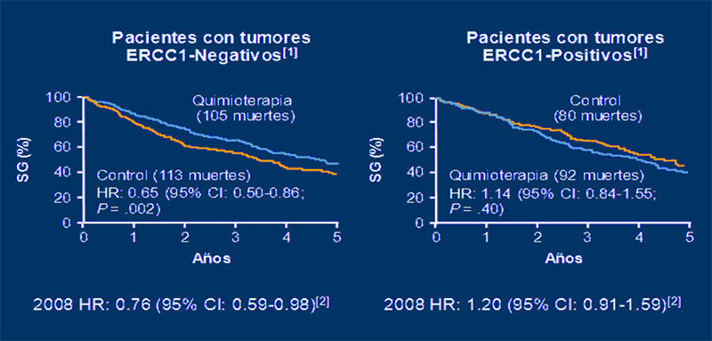
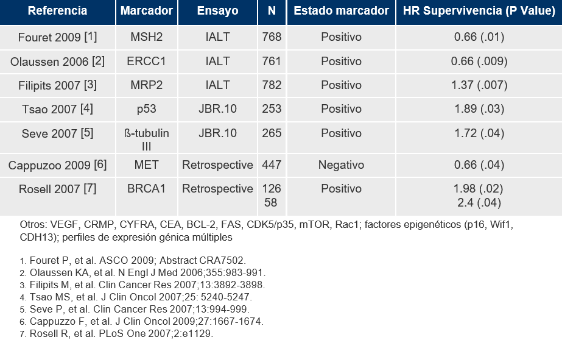
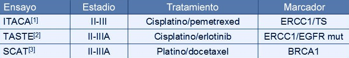
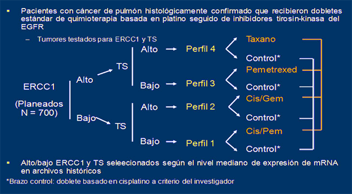

MÓDULO 2 : Tratamiento de los estadios precoces

2.4 Estudio de biomarcadores en el tratamiento adyuvante del cáncer de pulmón intervenido
Perfiles moleculares
Globalmente, la quimioterapia adyuvante en cáncer de pulmón mejora la supervivencia a 5 años entre 4-15%. Sin embargo, no todos los pacientes tratados con quimioterapia adyuvante se benefician de la misma. Una de las líneas de investigación relevantes está en identificar factores pronósticos que nos ayuden a predecir los pacientes que van a recidivar tras la cirugía y, en este grupo de pacientes, definir factores predictivos de respuesta que nos ayuden a definir tratamientos individualizados. Por el momento, no disponemos en la práctica clínica de ningún marcador que permita seleccionar aquellos pacientes que se beneficiarán de QT adyuvante.
El estudio IALT es uno de los ensayos adyuvantes con mayor número de pacientes incluidos. En este estudio los investigadores examinaron múltiples biomarcadores. Se reclutaron más de 1800 pacientes que fueron randomizados a observación o a quimioterapia basada en cisplatino. Los centros participantes que incluyeron más de 10 pacientes aportaron bloques de tejido tumoral, con lo que se obtuvieron casi 900 bloques, de los que alrededor de 800 fueron válidos para análisis de microarrays que incluyó 768 pacientes. Se han evaluado 19 biomarcadores por inmunohistoquímica en casi la mitad de los pacientes.
IALT-BIO: Potenciales biomarcadores moleculares predictivos con la quimioterapia adyuvante
En la actualidad, el fármaco esencial en el tratamiento de quimioterapia adyuvante del cáncer de pulmón, es el cisplatino. El efecto citotóxico de los platinos se atribuye a la formación de aductos de DNA. La eliminación de estos aductos del DNA se realiza por el sistema NER (nucleotide excision repair system). ERCC1 (excision repair cross-complementing group 1) tiene un papel fundamental en el sistema NER y, la evidencia apunta a que los niveles de ERCC1 son cruciales para la eliminación de los aductos de DNA debidos al platino. Se han publicado los datos del valor de la determinación por inmunohistoquímica de ERCC1 como predictor de beneficio a la quimioterapia adyuvante en los pacientes incluidos en el estudio IALT (BIO-IALT). Se pudo determinar el ERCC1 en 761 pacientes: 389 tratados con quimioterapia y 372 del grupo control.
En el grupo control (pacientes que no recibieron quimioterapia adyuvante), aquellos con expresión positiva de ERCC1 tenían un mejor pronóstico (HR 0,65; P < 0,008) que los pacientes con expresión negativa de ERCC1. Para los pacientes con tumores ERCC1 negativos: mediana de supervivencia de 56 meses en el grupo de quimioterapia versus 42 meses en el grupo control (HR 0,67; P < 0,006). Para los pacientes con tumores ERCC1 positivos: mediana de supervivencia de 50 meses en el grupo de quimioterapia versus 55 meses en el grupo control (HR 1, 18; P = 0,29).
IALT: Valor pronóstico y predictivo de ERCC1 en el tratamiento adyuvante
La conclusión del estudio fue que la expresión por inmunohistoquímica de ERCC1 es un factor pronóstico en pacientes resecados no tratados y que es un factor predictivo del efecto de la quimioterapia adyuvante, beneficiándose de la misma los pacientes con ERCC1 negativo, pero no los positivos. Hasta la fecha ningún otro estudio ha validado de forma prospectiva el papel de ERCC1, por lo que no se utiliza como marcador en la práctica clínica.
Una gran cantidad de biomarcadores pronósticos han sido evaluados hasta la fecha en pacientes con CNMP resecados. Todos ellos son estudios retrospectivos e incluyen fundamentalmente pacientes de los estudios IALT y JBR.10. Muchos de los biomarcadores analizados tienes HR significativos con valores de 0.6 o, a la inversa, de 1.4-1.7, lo que indica que pueden determinar el pronóstico del paciente independientemente del tratamiento. Sin embargo, tienen la limitación de que han sido obtenidos de estudios retrospectivos y es difícil determinar cuál de ellos tiene mayor utilidad clínica.
Biomarcadores pronósticos en CNMP en estadios tempranos
Posteriormente el “ LACE-Bio Project” intentó validar sin éxito algunos de esos biomarcadores de respuesta a quimioterapia entre los pacientes que habían participado en el meta-análisis de LACE. Ni p27 ni ERCC1 pudieron validarse como marcadores predictivos de respuesta a QT en este proyecto.
Asimismo el estudio SCAT, liderado por el Grupo Español de Cáncer de pulmón, tampoco pudo validar el papel predictivo de respuesta de BRCA1 en pacientes N1 intervenidos de cáncer de pulmón.
El estudio BREC, que evaluaba la quimioterapia customizada en base a la expresión de BRCA1/RAP80, cerró de forma precoz por falta de beneficio clínico en el brazo de QT customizada.
El estudio francés TASTE también cerró en su fase III sin poder evaluar el papel predictivo de ERCC1 por problemas en su medición mediante IHQ.
Actualmente se encuentra en marcha el estudio ITACA que evalúa la respuesta a distintos fármacos de quimioterapia adyuvante según los niveles de expresión de ERCC1 y de Timidilato Sintasa.
Ensayos prospectivos adyuvantes con biomarcadores en CNMP
El International Tailored Chemotherapy Adjuvant Trial (ITACA) es un ensayo fase III que compara quimioterapia estándar versus quimioterapia dirigida por biomarcadores. En el brazo control los pacientes reciben quimioterapia basada en un doblete de platino seleccionado por el investigador, mientras que los pacientes en el brazo experimental reciben tratamiento basado en niveles de ERCC1 y TS. Los pacientes con niveles altos de ERCC1 y de TS serían potencialmente resistentes a platino y pemetrexed y, por tanto, recibirían un taxano. Los pacientes con niveles bajos de ERCC1 y de TS serían sensibles tanto a cisplatino como pemetrexed y recibirían una combinación de estos agentes. Los pacientes con niveles altos de ERCC1 y bajos de TS recibirían pemetrexed (sin platino), y los pacientes con niveles bajos de ERCC1 pero altos de TS recibirían cisplatino/gemcitabina (sin pemetrexed).
International Tailored Chemotherapy Adjuvant Trial (ITACA)
